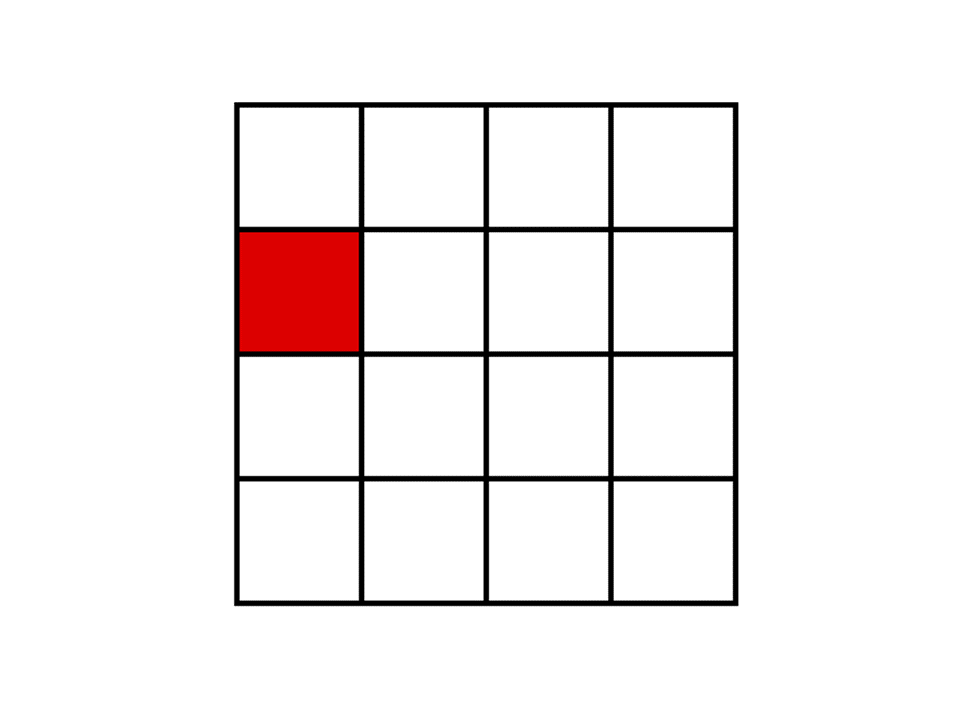

<html>

<head>
  <title>WM symmetry span task</title>
  <script src="../seedrandom.min.js"></script>
  <script src="../jquery.min.js"></script>
  <script src="../js-helpers-old.js"></script>
  <script src="../jstat.js"></script>
  <script src="../jspsych-6.0.4/jspsych.js"></script>
  <script src="../jspsych-6.0.4/plugins/jspsych-html-keyboard-response.js"></script>
  <script src="../jspsych-6.0.4/plugins/jspsych-html-button-response.js"></script>
  <script src="../jspsych-6.0.4/plugins/jspsych-symmetry-judgement-task.js"></script>
  <script src="../jspsych-6.0.4/plugins/jspsych-survey-text.js"></script>
  <script src="../jspsych-6.0.4/plugins/jspsych-survey-multi-choice.js"></script>
  <script src="../jspsych-6.0.4/plugins/jspsych-instructions.js"></script>
  <script src="../jspsych-6.0.4/plugins/jspsych-fullscreen.js"></script>
  <script src="../jspsych-6.0.4/plugins/jspsych-spatial-span.js"></script>
  <script src="../jspsych-6.0.4/plugins/jspsych-spatial-span-recall.js"></script>
  <script src="https://cdn.jsdelivr.net/npm/jstat@latest/dist/jstat.min.js"></script>
  <script src="https://ajax.googleapis.com/ajax/libs/jquery/1.11.1/jquery.min.js"></script>
  <link href="../jspsych-6.0.4/css/jspsych_grid.css" rel="stylesheet" type="text/css">
  </link>
</head>

<body></body>
<script>
  /*
      This is a web-based symmetry span working memory test.
      It is modelled after the operation span test described in Oswald et al (2014) [https://link.springer.com/article/10.3758/s13428-014-0543-2].
      However, users can easily customize this test for their own purposes.
      Easily customizable variables have been listed below. For further changes to the test, knowledge of JavaScipt may be required.

      For smooth functioning of the test, make sure all the associated github files within the repository have been downloaded (especially the folder named 'jspsych-6.0.4').
      Results from this test will be automatically downloaded into the downloads folder of your desktop.

      For further details, please refer to the README.
  */

  //----- CUSTOMIZABLE VARIABLES -----------------------------------------

  // this variable has to be read out from prolific url, eventually
  if (window.location.search.indexOf('session') > -1) {
    var session_id = getQueryVariable('session');
  } else {
    var session_id = 0
  }
  // 0 meaning session 1, 1 meaning session 2

  minSetSize = 3 // starting length of each trial (i.e., min number of letters in a trial)
  maxSetSize = 6 // ending length of each trial (i.e., max number of letters in a trial)
  repSet = 3 // number of times each set size should be repeated
  randomize = true // present different set sizes in random order. if false, set sizes will be presented in ascending order
  file_name = null // file name for data file. if null, a default name consisting of the participant ID and a unique number is chosen.
  local = false // save the data file locally.
  var n_comprehension_attempts = 1;
  var is_practice = 1;


  var t_start = Date.now();
  // If this test is being run online (e.g., on MTurk), true will cause the file to be downloaded to the participant's computer.
  // If this test is on a server, and you wish to save the data file to that server, change this to false.
  // If changed to false, ensure that the php file (its in the directory!) and the empty "data" folder has also been appropriately uploaded to the server.
  // Incase of problems, feel free to contact me :)

  //----------------------------------------------------------------------
  if (window.location.search.indexOf('PROLIFIC_PID') > -1) {
    var participant_id = getQueryVariable('PROLIFIC_PID');
  }
  // If no ID is present, generate one using random numbers - this is useful for testing
  else {
    var participant_id = Math.floor(Math.random() * 1000);
  }
  // STUDY ID
  if (window.location.search.indexOf('STUDY_ID') > -1) {
    var studyID = getQueryVariable('STUDY_ID');
  }
  progress_url = updateQueryStringParameter("wm-updating-numerical.html", "PROLIFIC_PID", participant_id);


  var setSizes = setSizes_symm[session_id];
  var setSizes_test = setSizes.slice(6,);
  var squaregridDemoArray = setSizes.slice(0, 3);
  var fullDemoArray = setSizes.slice(3, 6);
  var setSizes_practice = squaregridDemoArray.concat(fullDemoArray);
  const selections_practice = selections_symm[session_id].slice(0, 6);
  const selections_test = selections_symm[session_id].slice(6,);

  var nTrials = setSizes_test.length //2 // 
  var nPracticeTrials = squaregridDemoArray.length //number of practice trials for square memorization
  var nfullDemo = fullDemoArray.length;

  //var squaregridDemoArray = [3, 4, 4]
  //var fullDemoArray = [3, 3, 4]
  //var setSizes_practice = [3, 4, 4, 3, 3, 4];


  /* var setSizes = []    // different set sizes
  for (var i = minSetSize; i <= maxSetSize; i++) {
    for (var r = 1; r <= repSet; r++) {
      setSizes.push(i)
    }
  } */

  // max possible number correct recalled items
  const n_max_correct = setSizes_test.reduce(function (a, b) { return a + b; }, 0);
  // counter for actually correctly recalled items
  var n_recalled_cumulative = 0;

  var grid = 4;
  var matrix = [];
  for (var i = 0; i < grid; i++) {
    m1 = i;
    for (var h = 0; h < grid; h++) {
      m2 = h;
      matrix.push([m1, m2])
    }
  };

  //var nTrials = 2;
  /* if (randomize) {
    setSizes = jsPsych.randomization.sampleWithoutReplacement(setSizes, nTrials)
  } */ // shuffle through the set sizes


  //var setSizes = squaregridDemoArray.concat(fullDemoArray, setSizes)

  var n = 0 //keeps track of number of trials gone by
  var counter_symmetry = 0


  var selection = selections_practice[n];
  var selection_id = -1  //keeps track of recall items within a test stack

  var nSymmetryAcc = 0 //feedback
  var nSquaresRecalled = 0 //feedback

  var instructions = {
    type: 'instructions',
    pages: function () {
      pageOne = '<div style="font-size:20px;"><b>INSTRUCTIONS</b><br><br><br>This is the symmetry span task. <br><br>This task has two parts: <br>(1) Square memorization <br>(2) Symmetry judgement<br><br><br></div>'
      pageTwo = '<div style="font-size:20px;">We will first practice SQUARE MEMORIZATION.<br><br>You will see a grid of squares on the screen.<br>Several squares will turn red one at a time (around 3 to 6 in a trial).<br>Try to remember which squares turned red and the order in which they turned red.<br><br>Below is an example of the grid with one square colored red. <br><br> </img></div>'
      pageThree = '<div style="font-size:20px;">After this, you will be shown an empty grid.<br>Your task is to select the squares that turned red in their correct presentation order. <br><br>Use the mouse to select the appropriate squares. <br>If you make a mistake use the provided "Backspace" button to clear your last response. <br><br>Remember, it is important that you select the squares in the order that you saw them.<br> So if you forget one of the squares, guess the best you can for that one, and select the rest in their correct order.<br><br>Press "Next" for practice trials.<br><br></div>'
      return [pageOne, pageTwo, pageThree]
    },
    allow_backward: false,
    button_label_next: "Next",
    show_clickable_nav: true
  }

  var instructions2 = {
    type: 'instructions',
    pages: function () {
      pageOne = '<div style="font-size:20px;">We will now practice SYMMETRY JUDGEMENTS.<br><br>A black and white picture will appear on the screen and you have to judge if the picture is symmetrical or asymetrical.<br>A picture is symmetrical if its left half is identical to the right half when flipped.<br>Below are examples of symmetrical and asymetrical pictures:<br> </img><br><br>Press "Next" to start practicing symmetry judgements.</div>'
      return [pageOne]
    },
    allow_backward: false,
    button_label_next: "Next",
    show_clickable_nav: true
  }

  var instructions3 = {
    type: 'instructions',
    pages: function () {
      pageOne = '<div style="font-size:20px;">We will now practice the two tasks together.<br><br>In the next practice set, you will first be presented with a red colored square.<br>Try and remember the position of that colored square.<br>After the colored square disappears, you will be asked to make a symmetry judgement of a black and white picture.<br><br>Try making the symmetry judgement as soon as possible.<br>Each symmetry judgement picture will be presented for only 6 seconds.<br><br></div>'
      pageTwo = '<div style="font-size:20px;">After the symmetry judgement, you will be shown another colored square to remember,<br>which will be followed by another symmetry judgement.<br><br>Therefore, colored square presentations and symmetry judgements will alternate.<br>After 3 to 6 squares have been presented, the recall grid will appear.<br>Use the mouse to select the presented squares in their correct order.<br><br>Press "Next" to start practice rounds.<br><br></div>'
      return [pageOne, pageTwo]
    },
    allow_backward: false,
    button_label_next: "Next",
    show_clickable_nav: true
  }

  var instructions_before_compcheck = {
    type: 'instructions',
    pages: function () {
      pageOne = '<div style="font-size:20px;">We have finished with the practice trials.<br><br>We will now check your comprehension of the task.<br>If you do not manage to answer all questions correctly, you will get another chance to read the instrutions and to do the practice trials.<br><br>Press "Next" to start with the comprehension check.<br><br></div>'
      return [pageOne]
    },
    allow_backward: false,
    button_label_next: "Next",
    show_clickable_nav: true
  }

  var instructions_before_test = {
    type: 'instructions',
    pages: function () {
      pageOne = '<div style="font-size:20px;">Well done. The test procedure of the symmetry span is starting now.<br><br></div>'
      return [pageOne]
    },
    allow_backward: false,
    button_label_next: "Next",
    show_clickable_nav: true
  }


  var nProportionDemo = 0
  var cog_load_demo = {
    type: 'symmetry-judgement-task',
    size: 8,
    trial_duration: null,
    number_darkened: [17, 18, 19],
    stimulus: "Is this image symmetric?",
    participant_id: participant_id,
    session_id: function () { return session_id },
    counter_symmetry: function () { return counter_symmetry },
    trial_id_recall: function () {
      return n
    },
    is_local: function () {
      return local
    },
    is_practice: function () { return is_practice },
    proportion: function () {
      counter_symmetry += 1;
      nProportionDemo += 1
      if (nProportionDemo == 1) {
        return 1
      } else if (nProportionDemo == 2) {
        return 0
      } else {
        return 0.5
      }
    }
  }

  var cog_load = {
    type: 'symmetry-judgement-task',
    size: 8,
    trial_duration: 6000,
    number_darkened: [17, 18, 19],
    stimulus: "Is this image symmetric?",
    participant_id: participant_id,
    session_id: function () { return session_id },
    counter_symmetry: function () { return counter_symmetry },
    trial_id_recall: function () {
      return n
    },
    is_local: function () {
      return local
    },
    is_practice: function () { return is_practice },
    on_finish: function () {
      var acc = jsPsych.data.get().last(1).values()[0].accuracy;
      counter_symmetry += 1;
      if (acc == 1) {
        nSymmetryAcc += 1
      }
    }
  }

  var test_stimuli = {
    type: 'spatial-span',
    grid_size: function () {
      return grid
    },
    trial_duration: 1000,
    selected_box: function () {
      selection_id += 1
      return selection[selection_id]
    }
  }

  var end_test_stimuli = {
    type: 'spatial-span',
    grid_size: function () {
      return grid
    },
    trial_duration: 0,
    selected_box: function () {
      return selection[selection_id]
    },
    display_red_box: false,
    on_finish: function () {
      if (selection_id + 1 >= selection.length) {
        jsPsych.endCurrentTimeline()
      }
    }
  }

  var recall = {
    type: 'spatial-span-recall',
    grid_size: function () {
      return grid
    },
    correct_order: function () {
      return selection
    },
    data: function () {
      if (is_practice == 1) {
        var stim = setSizes_practice
      } else if (is_practice == 0) {
        var stim = setSizes_test
      }
      return { set_size: stim[n] }
    },
    trial_id_recall: function () {
      return n
    },
    is_local: function () {
      return local
    },
    is_practice: function () { return is_practice },
    on_finish: function () {
      nSquaresRecalled = jsPsych.data.get().last(1).values()[0].accuracy;

      if (is_practice == 1) {
        nSquares = setSizes_practice[n]

      } else if (is_practice == 0) {
        nSquares = setSizes_test[n]
      }
      n += 1
      if (is_practice == 1) {
        selection = selections_practice[n]
      } else if (is_practice == 0) {
        n_recalled_cumulative += nSquaresRecalled;
        selection = selections_test[n]
      }
      selection_id = -1
    }
  }

  var feedback = {
    type: 'instructions',
    pages: function () {
      pageOne = "<div style='font-size:20px;'><b>You recalled <font color='blue'>" + nSquaresRecalled + " out of " + nSquares + "</font> squares in their correct order.</b><br><br>"
      if (n > nPracticeTrials) {
        pageOne += "You made <font color='blue'>" + nSymmetryAcc + " out of " + nSquares + "</font> accurate symmetry judgement(s).<br><br></div>"
      }
      return [pageOne]
    },
    allow_backward: false,
    button_label_next: "Next Trial",
    show_clickable_nav: true,
    on_finish: function () {
      nSymmetryAcc = 0
    }
  }

  var feedbackSymm = {
    type: 'html-keyboard-response',
    stimulus: function () {
      var text = ""
      var accuracy = jsPsych.data.get().last(1).values()[0].accuracy
      if (accuracy == 1) {
        text += '<div style="font-size:35px; color:rgb(0 220 0)"><b>Correct</div>'
      } else {
        text += '<div style="font-size:35px; color:rgb(240 0 0)"><b>Incorrect</div>'
      }
      //text += '<div style="font-size:30px; color:rgb(0 0 0)"><br><br>New trial starting now.</div>'
      return text
    },
    choices: jsPsych.NO_KEYS,
    trial_duration: 1000
  }

  var conclusion = {
    type: 'html-keyboard-response',
    stimulus: function () {
      return '<div style="font-size:20px;">This task is over.<br><br>The next task is going to be the working memory updating task.</div>'
    },
    choices: jsPsych.NO_KEYS,
    trial_duration: 5000,
    on_finish: function () {
      data_bonus = {
        participant_id: participant_id,
        prop_correct: Math.round(100 * (n_recalled_cumulative / n_max_correct)) / 100
      };
      saveData(JSON.stringify(data_bonus), "SS_bonus_" + participant_id + ".json", "SS");
    }
  }

  var p_details = {
    type: "survey-text",
    questions: [{ prompt: "Enter subject number" }],
    on_finish: function () {
      partN = jsPsych.data.get().last(1).values()[0].partNum
      partN = partN.replace(/['"]+/g, '')
    }
  }

  /* function saveData(filename, filedata) {
    $.ajax({
      type: 'post',
      cache: false,
      url: 'save_data.php', // this is the path to the above PHP script
      data: { filename: filename, filedata: filedata }
    });
  }; */

  var IDsub = Date.now()

  var test_stack = {
    timeline: [test_stimuli, cog_load, end_test_stimuli],
    repetitions: 10
  }

  var test_procedure = {
    timeline: [test_stack, recall, feedback],
    repetitions: nTrials
  }

  var squaresDemoStack = {
    timeline: [test_stimuli, end_test_stimuli],
    repetitions: 10
  }

  var squaresDemo = {
    timeline: [squaresDemoStack, recall, feedback],
    repetitions: nPracticeTrials
  }

  var symmetryDemo = {
    timeline: [cog_load_demo, feedbackSymm],
    repetitions: 5
  }

  var fullDemo = {
    timeline: [test_stack, recall, feedback],
    repetitions: nfullDemo
  }


  //compcheck1: if answer incorrect, compcheck1 will be repeated until correct response inserted
  //compcheck1: if answer incorrect, compcheck1 will be repeated until correct response inserted
  var comp_check_ss_loop = {
    timeline: [instructions, squaresDemo, instructions2, symmetryDemo, instructions3, fullDemo, instructions_before_compcheck, comprehension_question_ss_allinone, comp_feedback_old],
    //timeline: [fullDemo, comprehension_question_ss_allinone, comp_feedback_old],
    loop_function: function (data) {
      // reset counters
      n = 0;
      selection_id = -1;
      counter_symmetry = 0;
      len_data = data.values().length;
      if (
        data.values()[len_data - 2].correct == true
      ) {
        data_comprehension = {
          participant_id: participant_id,
          n_attempts: n_comprehension_attempts,
          t_comprehension: Date.now() - t_start
        };
        is_practice = 0;
        nSquares = setSizes_test[n]
        selection = selections_test[n]
        saveData(JSON.stringify(data_comprehension), "SS_comprehension_check_" + participant_id + ".json", "SS");
        return false;
      } else {
        n_comprehension_attempts += 1;
        selection = selections_practice[n]
        return true;
      }
    }
  };


  timeline = []; //p_details we do not have to ask for participant id when run via prolific
  timeline.push({
    type: 'fullscreen',
    fullscreen_mode: true
  });
  timeline.push(comp_check_ss_loop);
  timeline.push(instructions_before_test);
  timeline.push(test_procedure);


  timeline.push({
    type: 'fullscreen',
    fullscreen_mode: false
  });
  timeline.push(conclusion)

  jsPsych.init({
    timeline: timeline,
    on_finish: function () {
      //jsPsych.data.displayData();// // comment out if you do not want to display results at the end of task
      //window.location.href = "https://app.prolific.co/submissions/complete?cc=240D34C0";
      //window.location.href = "wm-updating-numerical.html";
      window.location.href = progress_url + "&session=" + session_id;
    }
  });


</script>

</html>